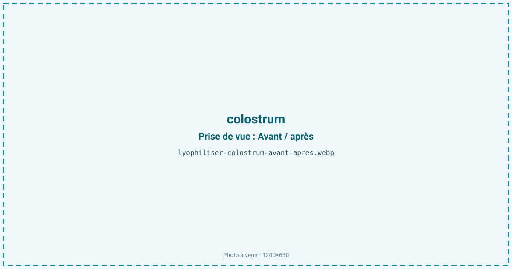
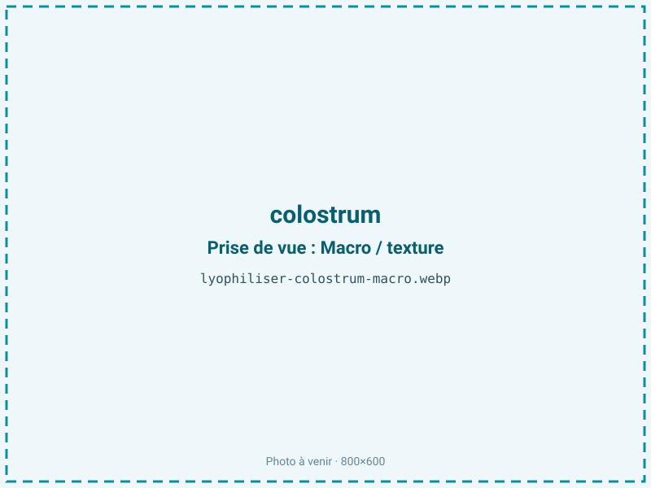
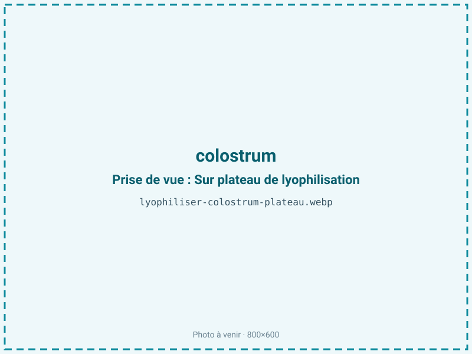
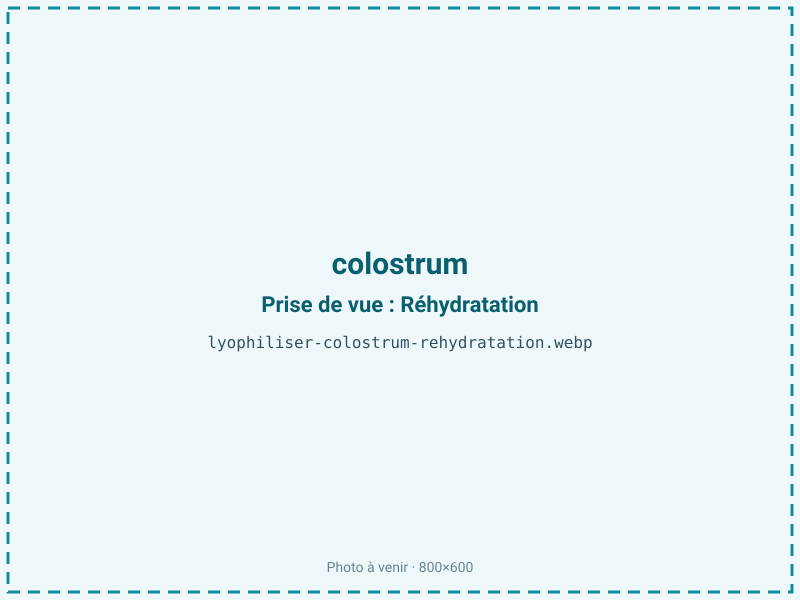

Lyophiliser du colostrum
Le colostrum, premier lait de la mère, est chargé d'immunoglobulines et de facteurs de croissance que la chaleur détruit. La lyophilisation est la seule façon d'en faire une poudre stable sans dénaturer ces molécules, pour les compléments immunitaires et la nutrition sportive haut de gamme.

En bref
Comment colostrum se comporte à la lyophilisation
Le colostrum liquide titre environ 80 % d'eau et concentre, bien plus que le lait mûr, des immunoglobulines (surtout des IgG, jusqu'à plusieurs dizaines de grammes par litre au premier colostrum bovin), de la lactoferrine et des facteurs de croissance comme l'IGF-1. Ces protéines bioactives sont thermosensibles : les IgG commencent à se dénaturer bien avant 100 °C, ce qui rend l'atomisation à chaud destructrice et justifie le recours au froid.
Le colostrum contient aussi du lactose et une fraction de matière grasse laitière. À la congélation, il faut une descente rapide pour former de fins cristaux qui n'endommagent pas les structures protéiques ; à la sublimation, l'eau part en laissant une poudre poreuse où IgG et facteurs de croissance restent, en principe, intacts. Le point de vigilance est le couple lactose-protéines : au stockage, il peut amorcer une réaction de Maillard qui dégrade à la fois la couleur et l'activité biologique, d'où l'exigence d'une aw très basse.
Paramètres de cycle
Partir d'un colostrum collecté et congelé rapidement après la traite, la fraîcheur conditionnant le taux d'IgG. Aucune montée en température au-delà du strict nécessaire : la clayette reste modérée en primaire, l'objectif étant de ne jamais dénaturer les protéines. Couler en couche fine et régulière, puis congeler vite à −35 °C ou plus bas pour préserver les structures bioactives.
Le palier secondaire est poussé et long, car la cible d'aw est très basse : 0,10 à 0,25. Cette aw basse se justifie doublement — elle stabilise les immunoglobulines dans le temps et bloque la réaction de Maillard entre lactose et protéines. Le critère d'arrêt vise donc cette aw très basse, contrôlée en fin de cycle, plutôt qu'un simple aspect sec.
Pièges connus
- Chaleur interdite : molécules bioactives fragiles.
- aw très basse requise pour la stabilité.



Variantes & provenance
La qualité du colostrum dépend d'abord du moment de collecte : le tout premier colostrum, dans les heures suivant la mise bas, est le plus riche en IgG ; passé un ou deux jours, la teneur chute vite et le produit se rapproche du lait. L'espèce compte — le colostrum bovin domine le marché, mais on traite aussi le caprin. L'alimentation et l'état immunitaire de la mère influent sur le profil en anticorps. Selon le débouché, on standardise le taux d'IgG par mélange de lots, et l'on ajuste la finesse de broyage de la poudre. La teneur en matière grasse, variable, module la sensibilité à l'oxydation du produit fini.
Conservation & DLUO
Le facteur limitant du colostrum n'est pas d'abord l'oxydation des graisses mais la préservation de l'activité des immunoglobulines et le brunissement de Maillard lactose-protéines : ces deux enjeux imposent une aw très basse, de 0,10 à 0,25. Cela crée une tension à connaître : sa fraction lipidique laitière, en tant que produit modérément gras, serait la plus stable entre aw 0,30 et 0,50, car en dessous de 0,30 on retire la monocouche d'eau qui protège les lipides et l'on favorise leur rancissement.
Ici, la stabilité biologique des IgG prime sur celle des lipides : on accepte donc l'aw basse et l'on protège la fraction grasse autrement, par une barrière opaque et un inertage. Comptez 18 à 24 mois en barrière opaque. Un stockage au sec, au frais et à l'abri de la lumière est essentiel, l'humidité étant l'ennemi direct des immunoglobulines.
18 à 24 mois en barrière opaque.
Estimez selon votre emballage :
Face aux autres procédés de séchage
L'atomisation (spray-drying) est le procédé standard du colostrum en poudre, économique et rapide, mais son front chaud dénature une part des immunoglobulines et des facteurs de croissance : le titre en IgG actives baisse. Le séchage à l'air chaud est pire encore et n'est pas envisageable pour un produit vendu sur son activité biologique. La lyophilisation, menée à froid, préserve bien mieux le taux d'IgG et l'IGF-1, ce qui en fait la référence pour un colostrum « bioactif » revendiquant un pourcentage d'anticorps garanti. Le surcoût du froid est justifié par la valeur santé du produit et par l'argument différenciant d'un titre en immunoglobulines élevé et vérifiable.
Marchés & applications
Le colostrum lyophilisé alimente les compléments immunitaires (gélules, poudres, sticks) et la nutrition sportive premium, où il est valorisé pour ses immunoglobulines et son IGF-1 sur la récupération. On le retrouve aussi en nutrition spécialisée et dans certains produits vétérinaires (colostrum de substitution pour les jeunes animaux). Les clients types sont les marques de compléments alimentaires, les acteurs de la nutrition sportive, et les coopératives laitières cherchant à valoriser un colostrum excédentaire à très forte valeur ajoutée quand il est bien stabilisé.
- Compléments immunitaires
- Nutrition sportive premium
Questions fréquentes — colostrum
Pourquoi lyophiliser le colostrum plutôt que le sécher à chaud ?
Parce que ses immunoglobulines se dénaturent à la chaleur : l'atomisation en détruit une partie, tandis que le froid préserve un titre en IgG élevé, l'argument central du produit.
La lyophilisation garde-t-elle les immunoglobulines actives ?
Oui, c'est son intérêt : menée à froid et à aw très basse, elle conserve bien mieux les IgG et les facteurs de croissance que les procédés à chaud.
Pourquoi une aw aussi basse (0,10-0,25) ?
Parce qu'elle stabilise les immunoglobulines dans le temps et bloque le brunissement de Maillard entre le lactose et les protéines, deux menaces propres au colostrum.
Quel colostrum donne le meilleur produit ?
Le tout premier, collecté dans les heures suivant la mise bas : sa teneur en IgG est maximale et chute vite dès le lendemain.
Combien de temps se conserve la poudre ?
18 à 24 mois en barrière opaque, au sec et au frais. L'humidité est l'ennemi direct des immunoglobulines, d'où le conditionnement soigné.
Le colostrum lyophilisé contient-il du lactose ?
Oui, mais moins que le lait mûr. C'est justement le couple lactose-protéines qu'il faut surveiller au stockage, d'où l'aw très basse.
Quel est le ratio du colostrum lyophilisé ?
Environ 6:1 : il faut à peu près 600 g de colostrum liquide pour 100 g de poudre, le liquide contenant autour de 80 % d'eau.
Prochaine étape : envoyez-nous 200 g
Vous avez les repères du colostrum. La suite logique : nous envoyer un échantillon et repartir avec une fiche technique sur votre produit — rendement, aw finale, coût au kilo.
Tester du colostrum — 250 à 500 €Déductible de votre premier lot.